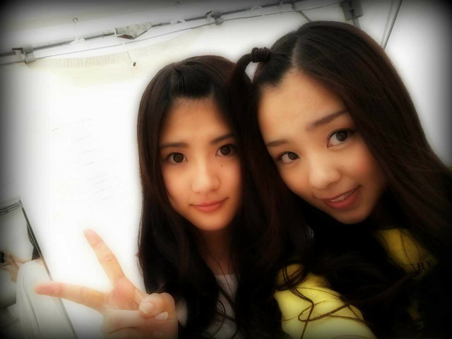

| 2012/05 20 Sun | 名古屋にて全握,ろってぃ ー♪ |
ほ〜い))
お疲れろってぃー☆
ろってぃーでぇぇす.

昨日は,名古屋にて
セカンドシングル
『おいでシャンプー♪』
の第一回目の
全国握手会でしたっ)))☆
めちゃくちゃ
良いお天気で
こりゃぁ〜暑いし
みんな体力的に
大丈夫なんかなぁ〜・_・`?
って心配してた面も
あったんですが、
なんか分からんけど
まひろ昨日,
最初から最後まで
めちゃくちゃ
元気でしたっ・∀・´★
本間楽しかったですっ^ω^!
みんなありがとっ♪
本間大好きやでぇ〜(⌒‐⌒)
で,この写真は裏で
ゆみ♪と撮ったもの(*^^*)

今回
トークを任された箇所が
多く,
『狼に口笛を』,や
『ハウス』の曲紹介を
やったり、
最初の意気込みを
言わせて頂けたり..∀
たくさん話せて
楽しかったですっ^ω^〃
まひろは
『狼に口笛を』,『ハウス』
,『乃木坂の唄』の
三曲っ♪!
歌いましたっっ)))★
どーでしたでしょうかぁ(・ω・?
『狼に口笛を』は
昨日が二回目のステージで
『ハウス』は
初めてとゆうことで
もっともっと
色々な場所でたくさんの人の
前で披露したいっ♪(⌒‐⌒)
と思いました!
これからもっと皆と練習して
もっともっと
いいパフォーマンスが
作れるはずだから
頑張ろうねっ!
ってメンバーと約束しました(*^^*)
それに,
せいらりん♪が
お誕生日だったのでねっ、
ステージ上での
サプライズも成功して
帰りバスの中での
サプライズも成功してねっ〃^ω^〃
良かったです^^
ぬいぐるみ♪に
『せいらりんおめでとっ♪
I love you, 』
って一言書いて
プレゼントしました〃ω〃笑
ほんで、昨日は帰ってきて
お風呂に入って上がったら
眠気がきて,,,,
でも髪の毛乾かさなきゃっ(・ω・;)
だから
ベッドの上で眠気と
戦ってました^ω^笑
少し乾かして,
ベッドにジャッブーン☆して
『あかんっ!!あかんっ!!
寝ちゃいかんっ!
髪の毛乾かさんとっ))!
明日ボサボサなるでっ,!』
って自分に言い聞かせて
ピョーーン))って
ベッドから降りて
髪の毛乾かして
またすぐ
『あ〜(=ω=。もう眠たいよwww』
ってゆって、
またベッドに
ジャッブーン☆して
ピョーーン,ジャッブーン
これを
3回繰り返して
昨日は寝ましたっ*・ω・*
そんなこんなで
今日も１日っ
頑張ぁ〜〜〜〜?
ロッティーーっ★☆★
のし。
ありがとうございました♪
コメント(168)
2012/05/20 10:36